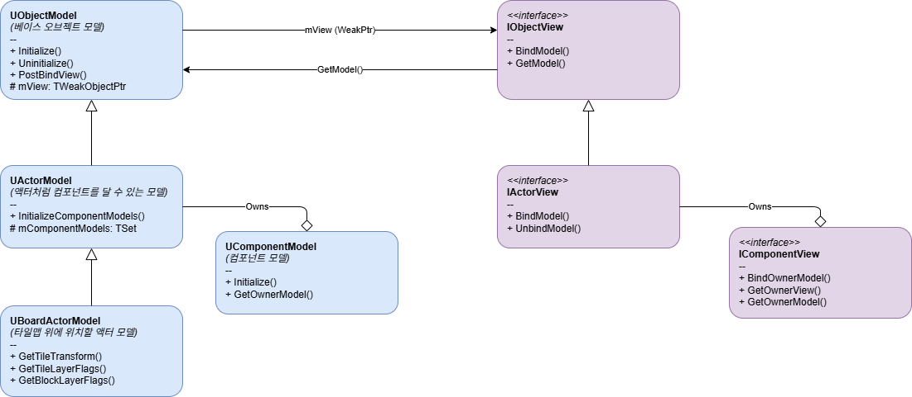

- 다음에 의해 생성됨 :
 1.9.8
1.9.8
|
P_RD 1.0
Rogue the dice Docs
|

본 리포트는 Model-View 프레임워크**의 핵심 설계, **인게임(Game) 및 시뮬레이션(Simulation) 환경에 따른 이원화 동작 구조, 그리고 **컴포넌트 데이터 모델(ComponentModel) 기반의 모듈화 구조**를 포함한 모델과 뷰의 생성, 소멸 생명 주기(Lifecycle) 및 상호 작용 흐름을 시각화하고 정리한 문서입니다.
시뮬레이션 서브시스템(USimulationSubsystem)은 게임 모드와 순수 시뮬레이션 모드라는 두 가지 환경을 상태(ESRPGSimulationState)에 따라 이원화하여 관리하며, 각 상황에 적절한 방의 맥락(FRoomContext)을 선택적으로 제공합니다.
ESRPGSimulationState)**RunningGame: 실제 플레이어가 눈으로 보고 조작하는 인게임 진행 모드입니다.RunningSimulation: 화면 렌더링이나 뷰(View) 액터 없이 백그라운드에서 논리적인 시뮬레이션만 빠르게 수행하는 모드입니다.mGameRoomContext)와 시뮬레이션용 컨텍스트(mSimulationRoomContext)를 모두 소유하고 있습니다.mSimulationState)에 맞춰 활성화된 컨텍스트의 주소를 mCurrentRoomContext 포인터에 바인딩하여 시스템 전반에 전달합니다.모델 생성 시 팩토리(UObjectModelFactory)는 활성화된 모드에 따라 뷰(View)를 함께 생성하여 양방향 바인딩을 진행할지, 아니면 순수하게 데이터 모델만 메모리에 올릴지 결정합니다. 또한 UActorModel인 경우 내부에 부착된 컴포넌트 모델(UComponentModel)들의 초기화 과정을 함께 처리합니다.
| 구분 | 인게임 모드 (UGameObjectModelFactory) | 시뮬레이션 모드 (USimulationObjectModelFactory) |
|---|---|---|
| 생성 대상 | 모델(Model) + 뷰 액터(AObjectView) | 순수 모델(Model)만 생성 |
| 뷰 바인딩 | 팩토리가 뷰 스폰 및 양방향 바인딩(BindModel/PostBindView) 수행 | 뷰를 생성하지 않으며 바인딩 과정 생략 |
| 성능 특징 | 렌더링 및 월드 스폰 오버헤드 존재 | 시각적 요소가 없어 초고속 백그라운드 연산 가능 |
UObjectModelFactory::NewModel_Internal에서 NewObject로 모델을 인스턴스화하고 현재 활성화된 FRoomContext를 바인딩합니다.Initialize()가 호출됩니다. 특히 UActorModel은 내부의 컴포넌트 목록(mComponentModels)을 순회하며 각 UComponentModel::Initialize()를 호출해 기능을 조립합니다.UGameObjectModelFactory::OnPostCreateNewModel에서 클래스 매핑 설정(mModelViewMappings)에 따라 뷰 역할을 할 언리얼 액터(AObjectView)를 레벨에 스폰합니다. 시뮬레이션 모드(USimulationObjectModelFactory)에서는 이 단계가 수행되지 않습니다.BindModel(Model)을 호출합니다. 뷰 액터는 자신에게 부착된 모든 컴포넌트 뷰(IComponentView)를 찾아 컴포넌트 뷰들에게 모델 인스턴스를 전달(BindOwnerModel)합니다. 이어서 모델의 PostBindView(View)를 호출하여 모델이 뷰를 약참조(TWeakObjectPtr)할 수 있도록 저장합니다.BeginPlay()를 호출합니다. UActorModel은 소유한 컴포넌트 모델들의 BeginPlay()를 연쇄적으로 호출하여 작동을 시작합니다.모델 소멸 시 팩토리는 시뮬레이션 종료를 모델에 알리고, 생성된 컴포넌트와 바인딩된 뷰를 정리한 뒤 가비지 컬렉션(GC) 대상이 되도록 처리합니다.
EndPlay()를 호출하여 실행을 중단합니다. UActorModel은 내부 컴포넌트 모델들의 EndPlay()를 호출하여 관련 기능을 안전하게 종료합니다.UGameObjectModelFactory::OnPreRemoveModel에서 뷰의 UnbindModel을 호출하여 의존성을 끊고, 뷰 액터를 레벨 상에서 Destroy()하여 월드에서 완전히 삭제합니다.Uninitialize()를 호출합니다. UActorModel은 모든 컴포넌트 모델들의 Uninitialize()를 차례로 호출하여 메모리 해제 준비를 끝마칩니다. 이후 팩토리의 활성 모델 관리 목록(mAliveModels)에서 스왑 제거(RemoveAtSwap)하여 가비지 컬렉터가 수거하도록 유도합니다.UComponentModel은 패시브 효과, 장착 아이템 등 다양한 상태나 기능을 퍼즐처럼 유연하게 조립하여 UActorModel에 확장할 수 있게 하는 컴포넌트 데이터 모델 클래스입니다.
ActorComponent 생성 및 등록 흐름과 구조적으로 동일하게 동작합니다.UActorModel의 AddComponentModelByClass 메서드를 활용하여 런타임 혹은 초기화 단계에 유연하게 추가할 수 있습니다.TSet<TObjectPtr<UComponentModel>> mComponentModels 컨테이너로 관리합니다.Initialize(), BeginPlay(), EndPlay(), Uninitialize() 생명 주기 함수가 호출될 때, 소유한 모든 컴포넌트 모델들로 동일한 생명 주기 호출이 전파됩니다.서브시스템 내에서 발생하는 각종 턴, 행동, 모션 결과들은 UEventLogger를 통해 로깅됩니다. 이 또한 팩토리와 유사하게 실행 상황에 맞춰 기록 여부가 이원화됩니다.
UGameEventLogger)**USimulationEventLogger)**mTurnEventLogs 배열을 포함한 구조화된 데이터 구조에 턴별 이벤트 로그(FSRPGTurnEventLog, FSRPGActionEventLog, FSRPGMotionEventLog)를 계층적으로 기록하고 저장합니다.PopSRPGLogs()를 통해 축적된 상세 데이터를 일괄적으로 반환받아 시뮬레이션 결과 리포트를 작성하는 데 활용합니다.